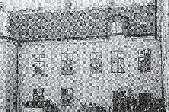

Institutionen
»lilla tullen», dvs. tullen på till städerna från landet införda varor, kom till 1622, och Långholmens
sjötull, belägen vid en vik på öns nordsida, bör ha inrättats vid denna tid. När Kungl. Maj:t genom
privilegiebrevet den 27 mars 1647 skänker Långholmen till staden, heter det i brevet: »allenast Oss
och Kronan förbehållet att alltid, så härefter som härtill, på vanlig och bekvämlig ort och ställe hava
där Vår tullplats och så stor sjöhamn, som till de anländande skutor och båtar av vilkas innehavande
gods tullen erläggas skall, vill behövas. »
Borgmästare och råd skulle ha fria händer att utdela, sälja eller mot tomtören upplåta mark åt dem,
som ville bygga och bo på ön. Bara några år efter donationen eller den 5 april 1649 gjordes en
förackordering »med Jockem Allstädh bryggare att han skulle giva detta året för Långholmen 14 dal.
smt och så med holmen handla som han vill, dock icke bebyggjan.» Åtta år senare sägs, att han skulle
'få bruka holmen i tre år mot årligt arrende av 20 dal. smt, och det sägs nu också att han må bygga
och förbättra på holmen mot ersättning när han avträder. I ett kungligt brev till borgmästare och råd
den 22 juni 1666 omtalas att Jochum Ahlstedt några år tidigare börjat »excolera» holmen och nu ville
inrätta mälteri och bryggeri samt anlägga fiskdammar, »där alltid inländsk och främmande fisk kunde
för billig penning bekommas». Året därpå fick han tomten på fri och egen grund.
Ahlstedt var av tysk härkomst och född i Lübeck 1611, inflyttade till Sverige på 1630-talet och
blev omsider bryggarnas ålderman i Stockholm och en självrådig sådan. Kammarkollegiet hade i
juli 1675 slutit kontrakt om bryggning av dricka för skeppsflottans räkning. För ändamålet ställde
kollegiet korn till förfogande, som bryggarna skulle fördela sinsemellan, mälta och av varje tunna
korn brygga fyra tunnor dricka.
Ahlstedt lät för egen del mälta hela partiet ute på Långholmen, sitt
bryggeri hade han i staden. När han inte inom föreskriven tid kunde fullgöra sin leverans till
flottan, kallades han inför kollegiet, där han av riksskattmästaren blev »hårdeligen tilltalad för
sådan Hans Kungl. Majas sidvördnad». Den förste kände långholmaren framstår alltså som den
förste kände brottslingen på ön, och man kan väl säga att han slapp lindrigt undan med det
»hårda tilltalet».
Ahlstedt, som utnämnts till hovbryggare, blev en mycket förmögen man, var gift tre gånger och
hade i sina äktenskap 14 barn. På den vidsträckta tomt han förvärvat på Långholmen anlade han
en magnifik trädgård och en till synes ståtlig malmgård, Allstavik, identisk med det av Johan
Spalding till rasp- och spinnhus försålda stenhuset (nedan).
Ahlstedt hade lagt ned stora kostnader på
sina domäner. År 1693, efter hans död, sades det att »berörda plats har bestått av en stenig
ödemark och berg, så att många tusen lass jord och sand ha måst tillföras, förrän man sig av
någon växt kunnat hugna». Trädgården brukades under hela spinnhustiden, utarrenderades
vanligen till enskilda trädgårdsmästare. En del stora lövträd, framför allt ekar, helt säkert från
Ahlstedts tid, står ännu kvar invid Västerbron.
I Kungl. bibliotekets bildarkiv (Tilas IV:49) förvaras en »Geometrisch Affritningh aff Alstawijk
som det nu för tiden på Långholmen beläget ähr. Anno 1681». Ritningen omfattar det av gångar
inrutade park- och trädgårdsområdet och även fasaden till ett slottsliknande hus i tre våningar
med hög takresning och frontespis, med pilastrar och en monumental yttre trappanläggning.
Vidare upptar bilden en planritning över första och andra våningarna i huset, upptagande
tillsammans elva rum. Åt norr är huset utbyggt i rät vinkel med en flygel. Huset finns alltjämt kvar
och är lätt att efter den gamla planritningen lokalisera till det hus, där bl.a. fångvårdsanstaltens
arbetsföreståndarekontor senast varit beläget.
Fängelsets kök har flyttats några gånger genom seklerna, men det är intressant att notera att
det nu sedan många år är beläget just där 1600-talsbyggnadens kök finns markerat. Ingenting finns
längre kvar av pilastrar och blomsterornament under vissa fönster, som enligt ritningen skulle ha
utmärkt byggnaden. Frontespis och fritrappa är också borta. Bara den ståtliga inre stentrappan och
takets kryssvalv är ännu på plats. Härom året upptäcktes efter en vattenläcka rester efter
takmålningar från husets storhetstid.
|
|

|
Tomtområdet på ritningen upptar 21 trädgårdskvarter, »Stora
stenhuset», Träbyggningen, Mälthuset, Smedjan och Kölnan, Kvarnen samt fem fiskdammar i
Pålsundet, då åtskilligt bredare än nu.Man kan följa tomten och dess bebyggelse på senare ritningar och kartor. På en sådan
ritning från 1746 framstår stenhuset ännu i någorlunda ograverat skick. Pilastrar och
blomsterornament är borta, men frontespisen är antydd och den förnäma fritrappan åt söder
är ännu kvar.
Ahlstedt blev som nämnts en rik man, och i bouppteckningen efter honom (han dog 30/1
1680) upptages hans malmgård på Långholmen till 60 000 dal. kmt och hans tre stenhus vid
Kornhamn, Järntorget och Gråmunkegränd till respektive 30 000, 18 000 och 7 500 samma
mynt. För Långholmsegendomen redovisas hästar, nötkreatur, svin och gäss. Ahlstedts namn
levde ännu på 1880-talet kvar i Jochum Bryggares gränd, nedre delen av Tyska brinken
mellan Stora Nygatan och Mälartorget.
Ahlstedts dotter Brita Christina gifte sig med en handelsman Carl Brander. I sin tur blev Branders
döttrar Anna Christina och Brita Elisabeth gifta med respektive Johan Spalding och Anders
Dahlström, den senare liksom Spalding kramhandlare i Stockholm. Brander dog 1712, men att döma
av hans bouppteckning hade han långt tidigare frånträtt det av honom förvärvade Allstavik eller
»Branderska huset», som det senare helt enkelt kom att kallas, till döttrar och mågar. Dahlström men
alldeles särskilt Spalding var kända män i Stockholms dåtida handelsvärld och kommunala
verksamhet. Spalding blev dessutom riksdagsrepresentant för borgerskapet.
Det nya rasp- och spinnhuset skulle enligt 1698 års stadga under en första tid förläggas till barn- och
tukthusbyggnaderna på S:ta Clara gärde på Norrmalm, området på norra sidan av nuvarande Barnhusgatan från Drottninggatan till Norra Bantorget, men redan 1699 utsågs en tomt med åbyggnad vid Lilla Rörstrand, och man
hade anskaffat raspar och andra verktyg samt stora mängder bresiljeträ. Allt var sålunda väl
förberett, när Kungl. Maj:t den 3 juli 1700 bestämde att med utförandet av de beslutade åtgärderna,
bl.a. iståndsättande av Rörstrandshuset, skulle anstå till bättre tider. Sådana tider lät vänta på sig.
Först den 23 juni 1722 uppdrog regeringen åt kommerskollegiet att fullfölja de gamla planerna. Åren
hade gått, och de ursprungliga riktlinjerna hade ändrats. Under 1600-talets sista år hade man avsett
att rasp- och spinnhuset skulle vara en stadens angelägenhet som i Holland och som i Stockholm, när
det gällde tukthuset. Det var också till staden, som konungen skänkt Rörstrandstomten, och det var
på borgerskapet som kostnaderna skulle slås ut. Det var staden som i gengäld skulle dra nytta av
rasp- och spinnhuset genom att tiggeriet kunde förväntas avtaga och man fick hjälp med
gaturenhållningen.
År 1722 blir det alltså kommerskollegiet, en statlig myndighet, som får uppdraget att fullfölja
anstaltsplanerna. Lokaliseringen till Rörstrand hade övergivits. Kommerskollegiet påpekade i skrivelse
till Kungl. Maj:t den 23 april 1722 att Rörstrandsgodset visserligen på sin tid hade reducerats till
kronan men hade av det Rosenstiernska sterbhuset återsökts » så att det med ingen säkerhet av
publico kan nyttjas». Om det skulle inlösas, skulle det också bli för kostsamt.
Nu krävdes alltså
statsmedel till nytt tomt- och fastighetsköp och till igångsättande och underhållande av
verksamheten. För underhållet fann man särskilda lösningar, som strax skall redovisas, men till
tomtköpet fanns inga andra pengar än de 12 000 dal. kmt, som för ändamålet testamenterats av
kommerserådet David Hildebrand, död 1720. sin skrivelse föreslog kommerskollegiet inköp av en handelsmannen Johan Spalding tillhörig egendom på Långholmen, för vilken Spalding begärde 37 000 dal. kmt.
Den 23 juni 1722 godkände Kungl. Maj:t detta förslag, som föreföll både bättre och
ekonomiskt förmånligare än Rörstrandsegendomen, och uttalade att det vore önskvärt att rasp-
och spinnhuset komme igång snarast möjligt. Så blev dock inte fallet, ty det visade sig mycket
svårt att få fram medel. Det var bara de Hildebrandska medlen som stod till omedelbart
förfogande.
I augusti 1722 undersökte man möjligheten att ta resterande 25 000 dal. kmt av
vissa konfiskationsmedel. I oktober följande år började Spalding bli otålig, och kommerserådet
Adlerstedt anmäler i kollegiet: »Spalding hade begärt att med första bliva förnöjd den köpeskilling
som kollegium honom betingat för det hus, som han till rasp- och spinnhus upplåtit emedan han
eljest haver tillfälle detsamma på annat sätt försälja.» Otåligheten är förklarlig; han hade ännu
inte ens fått de Hildebrandska pengarna, men nu fick Adlerstedt i uppdrag att fråga honom om
han läte sig nöja med att nu få dessa pengar och resten senare. Spalding svarade nej, han ville
ha hela köpesumman på en gång.
Mot julen 1723 utfärdade statskontoret en assignation på 8
333 dal. 10 2/3 öre smt (motsvarigheten till 25 000 dal. kmt), men räntmästaren Råfelt anmälde
att så mycket pengar fanns inte inne av de konfiskationsmedel, som skulle anlitas för köpet.
Ännu på våren 1724 hade Spalding ej fått allt vad han skulle ha och hotade åter med att sälja åt
andra. Restsumman delades upp på två omgångar, av vilka den sista, 12 000 dal. utbetalades
genom protokollsbeslut den 13 juli s.å. Den 3 juni hade köpebrev utfärdats. Detta må belysa
den statliga ekonomien efter de många åren av krig.
Att det fanns ett betydande intresse inom kommerskollegiet och i manufakturkretsar att få till
stånd rasp- och spinnhuset, visar redan Hildebrands donation. Nu gällde det inte längre stadens
behov av gaturenhållning och det allmänna behovet att ta hand om tiggare och lösdrivare. Nu
gällde det ett kraftigt handtag åt klädesfaktorierna med spinnhushjonens hjälp. Spånad av
klädesull var nämligen bland fria spinnerskor en dåligt betald och alltså föga eftertraktad
sysselsättning."